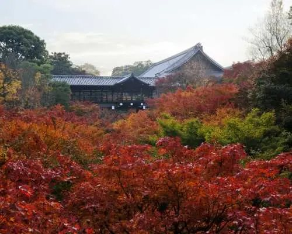
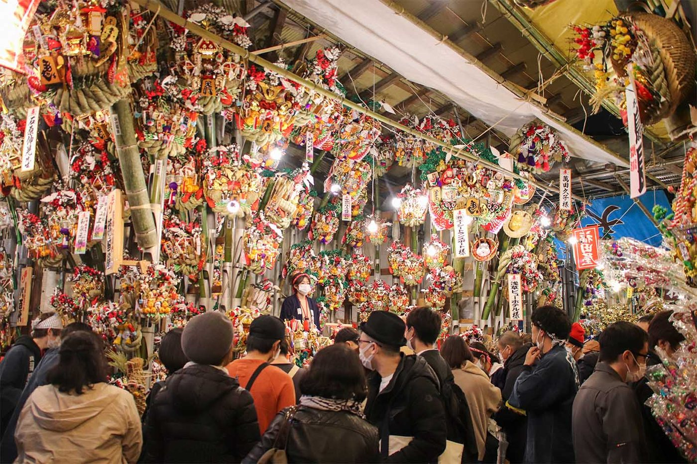
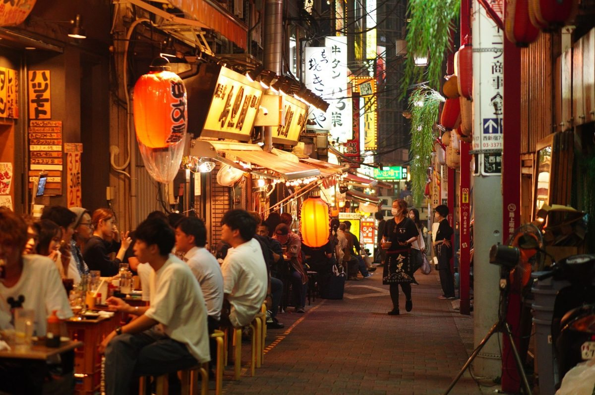
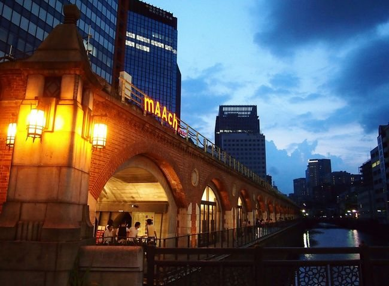
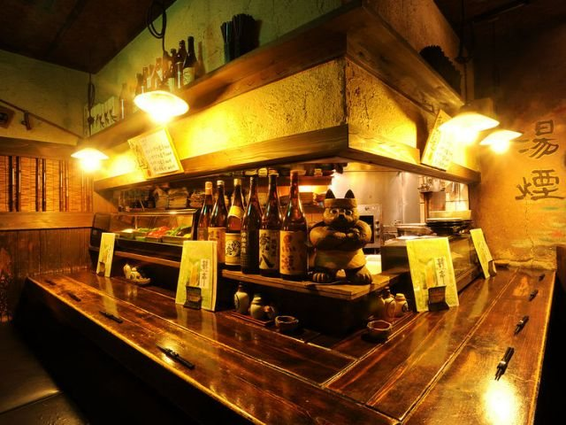
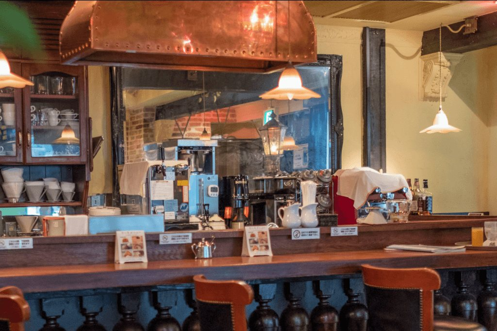
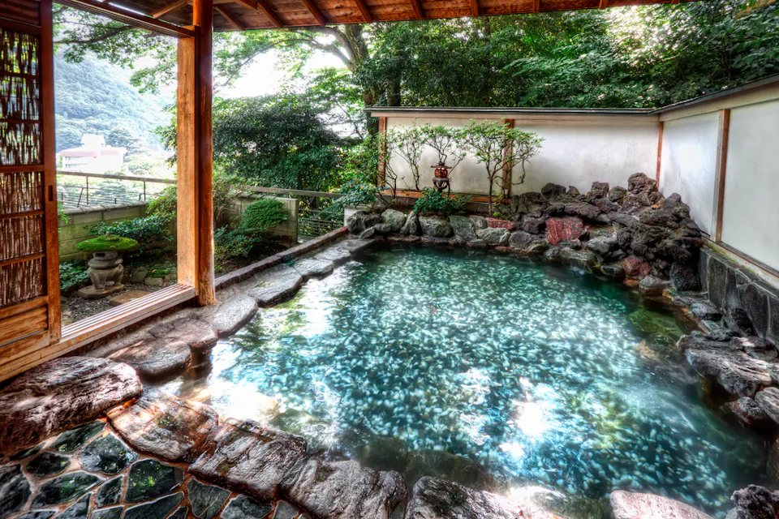
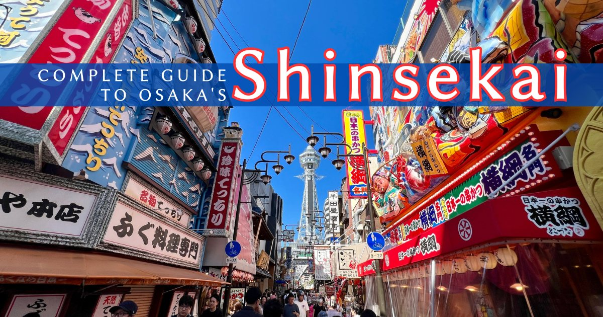

Токио, Киото, Нара и Осака. Клёны на пике, храмы подсвечены, в Асакусе шумит единственный в году базар, где принято торговаться. Всё остальное из календаря выброшено — здесь только то, что реально попадает в эти десять дней.

Вся поездка — это две базы: Токио на четыре ночи и Кансай на пять. Между ними один переезд на синкансэне, всё остальное — короткие ветки по 30–45 минут. Киото, Нара и Осака стоят треугольником, из которого никуда не надо тащить чемодан дважды.
Внутри каждого дня — реальный тайминг: подъём, завтрак, переходы, пауза после обеда. Без паузы к шестому дню ноги отваливаются, поэтому она есть в каждом длинном дне. Нажмите на день, чтобы раскрыть.
Вариант А — спокойный.
Вариант Б — парк Марио. Заменяет весь день.
Точки с номерами — ровно те места, что в плане выше. Цвет — день, в который вы там оказываетесь. Масштабная линейка в углу честная: по ней видно, что «далеко» в Токио — это сорок минут, а в Киото — двадцать минут пешком.
Всё, что было в октябре и декабре, вычеркнуто. Осталось то, что действительно работает с 24 ноября по 3 декабря — и объяснение, зачем ради этого сворачивать с маршрута.

Базар «грабель удачи»: бамбуковые кумадэ, сплошь увешанные золотом, масками и фигурками. Торговцы выстраивают их штабелями до крыши, а вы выбираете свои на весь год.
Киёмидзу-дэра, Кодай-дзи, Эйкан-до и Тофуку-дзи открыты вечером весь пик клёнов — примерно до 21:00, ¥500–1 000, без брони. Точное время каждый храм объявляет сам, сверяйтесь на входе. Днём туда очередь, в восемь вечера — двадцать человек.
146 деревьев в четыре ряда, 300 метров золота. Пик — 26 ноября–1 декабря, то есть ровно ваши даты. Вход свободный, двадцать минут от Сибуи. Ради этого и стоит выехать из отеля в восемь утра.
Четыре километра бульвара от Умэды до Намбы в гирляндах, с 3 ноября по 31 декабря, до часу ночи. Говорят «самая длинная иллюминированная улица в мире» — и это не реклама, а замер.
С конца ноября: немецкие палатки с глинтвейном на площади Тэммабаси у башни Абуэно-Харукас. Вечером после Дотонбори — пятнадцать минут на метро. Немного китч, но глинтвейн настоящий.
25-го числа каждого месяца, храм Китано Тэнмангу в Киото: восемьсот лотков со старьём и едой. В ваш план не попадает — в этот день вы в Токио. Но если поменяете дни местами, это лучший рынок поездки.
Пик в Киото — 20 ноября – 5 декабря. Тофуку-дзи, Эйкан-до, Киёмидзу. Окно поездки выбрано под них, и это единственная причина, по которой стоит терпеть ранние подъёмы.
Эти праздники всплывают в любом путеводителе по осени. Все они пролетают мимо вашего окна, и лучше знать это заранее, чем искать их на месте.
Не «от» и не диапазон на глазок, а смета по плану выше: десять дней, двое, отели среднего уровня, еда без самоистязания. Без перелёта.
| Статья | Из чего складывается | Иена |
|---|---|---|
| Жильё · 9 ночей | Токио 3 × ¥18 000, Киото 3 × ¥28 000, Осака 3 × ¥15 000 — номер на двоих | 183 000 |
| Еда · 10 дней | Завтрак ¥500, обед ¥1 500, ужин ¥3 000 на человека | 100 000 |
| Транспорт в городах | Метро и автобусы на двоих, все десять дней | 22 000 |
| Между городами | Ханэда→Синдзюку ¥1 080 · Токио→Киото ¥28 340 · Киото→Фусими-Инари→Нара ¥1 840 · Нара→Осака ¥1 160 · Осака→Кансай ¥1 940 | 34 360 |
| Входные билеты | Храмы, подсветки, Shibuya Sky, Умэда-Скай, два музея | 24 000 |
| Итого на двоих | на земле, без перелёта | 363 360 |
| На человека | 181 680 · ≈ 100 000 ₽ по курсу 0,55 · с перелётом 160–195 тыс ₽ | 181 800 |
Крутите ползунки — цифры пересчитываются на месте, галочки добавляют то, чего в маршруте нет.
Акихабара в этом плане — вечер третьего дня, два с половиной часа. Этого хватает, если знать, куда идти. Главная улица Тюо-дори — ловушка: дороже и всё то же самое.
Самое важное, что нужно знать заранее. В Токио 24 ноября солнце садится в 16:31, в Киото — в 16:48. К пяти вечера — ночь. Весь город живёт с этим: подсветки включают в четыре, ужинают в шесть, ложатся в десять.
Днём в Токио и Киото, к вечеру плюс пять. Куртка, шарф, тёплые носки. Дождь за десять дней — максимум один.
Клёны — высокий сезон внутри Японии. В Киёмидзу в одиннадцать не пройти. Лечится ранним утром и поздним вечером.
Храмы и сады — на утро, города и подсветки — на вечер. После пяти в парке без фонаря делать нечего.
Суббота и воскресенье — местные тоже едут на клёны. Ваши дни 4–5 попадают на уик-энд: вставать рано придётся.






От вас не требуют идеальности. Требуют внимания к мелочам, которые видно за секунду: как вы едите, как стоите в очереди, как говорите «спасибо».
Часть вещей нельзя купить на месте — их разбирают. Ниже только то, что требует даты, а не «на всякий случай».
| Когда | Что | Почему именно так |
|---|---|---|
| 29 декабря 2026 | Авиабилеты | Продажа на ноябрь 2027 открывается за 330–350 дней. Раньше — выбор рейсов минимальный. |
| Январь 2027 | Отели в Токио, Киото, Осаке | Конец ноября — высокий сезон клёнов внутри Японии. В Киото нормальные номера кончаются за 8–10 месяцев. |
| Май 2027 | Рёткан, если хочется | Малые рётканы берут брони за полгода и по телефону. |
| Сентябрь 2027 | Виза | Подача за три месяца, оформление 5–10 рабочих дней. Бесплатно, сбор визового центра ~970 ₽. |
| 10 октября 2027, 10:00 JST | Музей Гибли | Только через Lawson, ровно за месяц, разбирают за минуты. Для этого маршрута — опция. |
| Конец сентября 2027 | Shibuya Sky на закат | Слоты 17:00–17:30 уходят первыми. ¥2 500, перенос бесплатный. |
| Сентябрь 2027 | USJ: Studio Pass и Express | Если выбираете вариант Б. Express со входом в парк Марио — ¥12 800–19 800; без него в зону могут не пустить. |
| Не нужно | Поезда | Синкансэн и электрички без брони, места есть всегда. Кроме праздников — ваши даты чистые. |
В конце ноября бывает дождь, а в Киото — очередь на два часа. Вот что делать вместо, чтобы не потерять день.
Киото: музей манги, рынок Нисики под крышей, железнодорожный музей. Токио: аквариум, депато, подземные галереи станции. Осака: Синсайбаси и Курамон целиком под крышей.
Разворачивайтесь и идите в Кодай-дзи или Нандзэн-дзи: те же клёны, втрое меньше людей. Киёмидзу вернётесь вечером — на подсветку.
Вычеркните Арасияму, оставьте только Эйкан-до вечером. Или целый день в Киото без переездов: рынок, книжный, кофе, баня.
Только вместо одного дня в Киото: Митака в сорока минутах от Синдзюку. Билет за месяц через Lawson, вторник — закрыто. Киото сокращается до двух дней.
День 9 целиком в Осаке: Studio Pass ¥9 800 плюс Express со входом в SNW. Area Timed Entry берите в приложении сразу на входе, иначе в парк Марио не попасть.
Живите в Осаке и ездите в Киото электричкой: 40 минут, ¥580. Отели в Осаке дешевле киотских на 40 % — за три ночи это около ¥40 000 экономии.